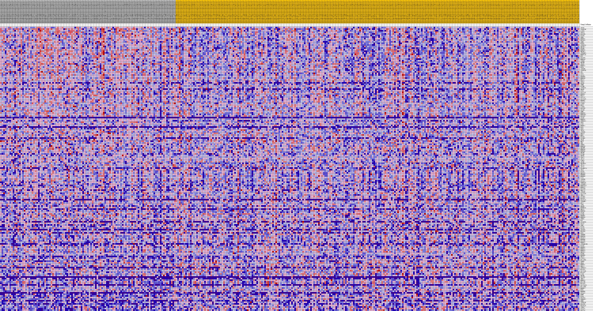
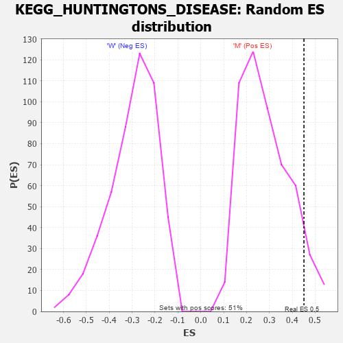

Profile of the Running ES Score & Positions of GeneSet Members on the Rank Ordered List
| Dataset | MUC16.MUC16.cls#M_versus_W.MUC16.cls#M_versus_W_repos |
| Phenotype | MUC16.cls#M_versus_W_repos |
| Upregulated in class | M |
| GeneSet | KEGG_HUNTINGTONS_DISEASE |
| Enrichment Score (ES) | 0.4510004 |
| Normalized Enrichment Score (NES) | 1.5854496 |
| Nominal p-value | 0.06809338 |
| FDR q-value | 0.1465576 |
| FWER p-Value | 0.65 |
| PROBE | DESCRIPTION (from dataset) | GENE SYMBOL | GENE_TITLE | RANK IN GENE LIST | RANK METRIC SCORE | RUNNING ES | CORE ENRICHMENT | |
|---|---|---|---|---|---|---|---|---|
| 1 | AP2B1 | na | 189 | 0.211 | 0.0118 | Yes | ||
| 2 | ATP5F1B | na | 199 | 0.210 | 0.0269 | Yes | ||
| 3 | CASP3 | na | 207 | 0.209 | 0.0419 | Yes | ||
| 4 | VDAC3 | na | 215 | 0.208 | 0.0568 | Yes | ||
| 5 | POLR2B | na | 267 | 0.202 | 0.0705 | Yes | ||
| 6 | PLCB3 | na | 271 | 0.201 | 0.0850 | Yes | ||
| 7 | SDHA | na | 316 | 0.195 | 0.0983 | Yes | ||
| 8 | NDUFS1 | na | 321 | 0.195 | 0.1124 | Yes | ||
| 9 | POLR2A | na | 392 | 0.188 | 0.1247 | Yes | ||
| 10 | SDHD | na | 394 | 0.188 | 0.1383 | Yes | ||
| 11 | RCOR1 | na | 486 | 0.180 | 0.1497 | Yes | ||
| 12 | ATP5F1A | na | 515 | 0.178 | 0.1621 | Yes | ||
| 13 | UQCRC1 | na | 549 | 0.176 | 0.1743 | Yes | ||
| 14 | PPARG | na | 697 | 0.167 | 0.1837 | Yes | ||
| 15 | NDUFS2 | na | 712 | 0.166 | 0.1955 | Yes | ||
| 16 | UQCRC2 | na | 925 | 0.154 | 0.2028 | Yes | ||
| 17 | ATP5MC3 | na | 1011 | 0.149 | 0.2120 | Yes | ||
| 18 | NDUFA10 | na | 1051 | 0.148 | 0.2221 | Yes | ||
| 19 | HTT | na | 1075 | 0.147 | 0.2323 | Yes | ||
| 20 | POLR2D | na | 1096 | 0.146 | 0.2425 | Yes | ||
| 21 | NDUFA9 | na | 1150 | 0.144 | 0.2520 | Yes | ||
| 22 | TAF4B | na | 1301 | 0.138 | 0.2593 | Yes | ||
| 23 | UQCRH | na | 1306 | 0.138 | 0.2693 | Yes | ||
| 24 | APAF1 | na | 1310 | 0.138 | 0.2792 | Yes | ||
| 25 | NDUFV1 | na | 1811 | 0.122 | 0.2789 | Yes | ||
| 26 | PPID | na | 1812 | 0.122 | 0.2878 | Yes | ||
| 27 | ATP5PB | na | 2470 | 0.106 | 0.2835 | Yes | ||
| 28 | ATP5F1D | na | 2477 | 0.106 | 0.2911 | Yes | ||
| 29 | SP1 | na | 2578 | 0.104 | 0.2968 | Yes | ||
| 30 | CYC1 | na | 2768 | 0.101 | 0.3007 | Yes | ||
| 31 | COX5A | na | 2773 | 0.100 | 0.3079 | Yes | ||
| 32 | NDUFB6 | na | 2781 | 0.100 | 0.3150 | Yes | ||
| 33 | NDUFA6 | na | 2792 | 0.100 | 0.3221 | Yes | ||
| 34 | HDAC1 | na | 2825 | 0.100 | 0.3287 | Yes | ||
| 35 | VDAC1 | na | 2826 | 0.100 | 0.3360 | Yes | ||
| 36 | GRIN1 | na | 2910 | 0.098 | 0.3416 | Yes | ||
| 37 | SDHB | na | 2942 | 0.097 | 0.3481 | Yes | ||
| 38 | DCTN4 | na | 2993 | 0.096 | 0.3541 | Yes | ||
| 39 | ATP5F1C | na | 3209 | 0.093 | 0.3570 | Yes | ||
| 40 | DNAH2 | na | 3265 | 0.092 | 0.3627 | Yes | ||
| 41 | CYCS | na | 3335 | 0.091 | 0.3680 | Yes | ||
| 42 | COX7A2L | na | 3356 | 0.091 | 0.3743 | Yes | ||
| 43 | NDUFS7 | na | 3378 | 0.091 | 0.3805 | Yes | ||
| 44 | HDAC2 | na | 3455 | 0.090 | 0.3856 | Yes | ||
| 45 | COX7A2 | na | 3525 | 0.089 | 0.3907 | Yes | ||
| 46 | SLC25A5 | na | 3716 | 0.086 | 0.3935 | Yes | ||
| 47 | NDUFB2 | na | 4041 | 0.081 | 0.3935 | Yes | ||
| 48 | COX4I1 | na | 4104 | 0.081 | 0.3982 | Yes | ||
| 49 | CASP9 | na | 4119 | 0.080 | 0.4038 | Yes | ||
| 50 | REST | na | 4172 | 0.080 | 0.4086 | Yes | ||
| 51 | CASP8 | na | 4446 | 0.076 | 0.4092 | Yes | ||
| 52 | POLR2E | na | 4668 | 0.073 | 0.4105 | Yes | ||
| 53 | COX5B | na | 4711 | 0.073 | 0.4150 | Yes | ||
| 54 | SDHC | na | 4869 | 0.071 | 0.4172 | Yes | ||
| 55 | NDUFS3 | na | 5045 | 0.069 | 0.4190 | Yes | ||
| 56 | NDUFAB1 | na | 5079 | 0.068 | 0.4234 | Yes | ||
| 57 | POLR2C | na | 5100 | 0.068 | 0.4280 | Yes | ||
| 58 | COX8C | na | 5161 | 0.067 | 0.4318 | Yes | ||
| 59 | NDUFA5 | na | 5244 | 0.067 | 0.4351 | Yes | ||
| 60 | CREB3L1 | na | 5360 | 0.065 | 0.4378 | Yes | ||
| 61 | SOD1 | na | 5456 | 0.064 | 0.4407 | Yes | ||
| 62 | CLTC | na | 5458 | 0.064 | 0.4453 | Yes | ||
| 63 | NDUFC1 | na | 5884 | 0.060 | 0.4420 | Yes | ||
| 64 | HAP1 | na | 5929 | 0.060 | 0.4455 | Yes | ||
| 65 | SOD2 | na | 6028 | 0.058 | 0.4480 | Yes | ||
| 66 | IFT57 | na | 6092 | 0.058 | 0.4510 | Yes | ||
| 67 | ATP5PO | na | 6360 | 0.055 | 0.4501 | No | ||
| 68 | DNAL4 | na | 6551 | 0.053 | 0.4505 | No | ||
| 69 | NRF1 | na | 7405 | 0.046 | 0.4384 | No | ||
| 70 | EP300 | na | 7680 | 0.044 | 0.4366 | No | ||
| 71 | COX6B2 | na | 8199 | 0.039 | 0.4300 | No | ||
| 72 | TFAM | na | 8277 | 0.039 | 0.4314 | No | ||
| 73 | BBC3 | na | 8453 | 0.037 | 0.4310 | No | ||
| 74 | TBP | na | 8466 | 0.037 | 0.4334 | No | ||
| 75 | CREB3 | na | 8516 | 0.037 | 0.4352 | No | ||
| 76 | NDUFA8 | na | 8673 | 0.035 | 0.4349 | No | ||
| 77 | UQCRHL | na | 8884 | 0.034 | 0.4336 | No | ||
| 78 | NDUFA4 | na | 8952 | 0.033 | 0.4348 | No | ||
| 79 | NDUFS4 | na | 9546 | 0.028 | 0.4261 | No | ||
| 80 | UQCRB | na | 9933 | 0.025 | 0.4209 | No | ||
| 81 | PLCB4 | na | 9938 | 0.025 | 0.4226 | No | ||
| 82 | DNAH1 | na | 10029 | 0.025 | 0.4228 | No | ||
| 83 | VDAC2 | na | 10089 | 0.024 | 0.4235 | No | ||
| 84 | AP2A2 | na | 10164 | 0.024 | 0.4238 | No | ||
| 85 | SIN3A | na | 10433 | 0.022 | 0.4205 | No | ||
| 86 | AP2M1 | na | 10644 | 0.020 | 0.4182 | No | ||
| 87 | UQCRFS1 | na | 10896 | 0.018 | 0.4149 | No | ||
| 88 | AP2A1 | na | 11051 | 0.017 | 0.4134 | No | ||
| 89 | AP2S1 | na | 11110 | 0.017 | 0.4136 | No | ||
| 90 | PPARGC1A | na | 11463 | 0.014 | 0.4082 | No | ||
| 91 | TP53 | na | 11609 | 0.014 | 0.4066 | No | ||
| 92 | COX8A | na | 11758 | 0.013 | 0.4048 | No | ||
| 93 | UQCR10 | na | 12102 | 0.010 | 0.3993 | No | ||
| 94 | NDUFB9 | na | 12327 | 0.009 | 0.3959 | No | ||
| 95 | NDUFB3 | na | 12527 | 0.008 | 0.3928 | No | ||
| 96 | CLTA | na | 12584 | 0.007 | 0.3924 | No | ||
| 97 | ATP5PD | na | 12654 | 0.007 | 0.3916 | No | ||
| 98 | COX6A1 | na | 12751 | 0.006 | 0.3903 | No | ||
| 99 | CREB3L4 | na | 12948 | 0.005 | 0.3871 | No | ||
| 100 | ATP5MC1 | na | 13034 | 0.004 | 0.3858 | No | ||
| 101 | NDUFA4L2 | na | 13569 | 0.001 | 0.3762 | No | ||
| 102 | NDUFA1 | na | 13662 | 0.000 | 0.3746 | No | ||
| 103 | POLR2H | na | 15019 | -0.000 | 0.3499 | No | ||
| 104 | DNALI1 | na | 15418 | -0.002 | 0.3429 | No | ||
| 105 | ATP5PF | na | 15825 | -0.004 | 0.3358 | No | ||
| 106 | SLC25A6 | na | 15897 | -0.004 | 0.3348 | No | ||
| 107 | TBPL1 | na | 15990 | -0.005 | 0.3335 | No | ||
| 108 | COX6B1 | na | 16326 | -0.007 | 0.3279 | No | ||
| 109 | POLR2L | na | 16423 | -0.007 | 0.3267 | No | ||
| 110 | POLR2J2 | na | 17220 | -0.012 | 0.3131 | No | ||
| 111 | ATP5MC2 | na | 17580 | -0.013 | 0.3075 | No | ||
| 112 | GPX1 | na | 18011 | -0.016 | 0.3009 | No | ||
| 113 | TAF4 | na | 18131 | -0.016 | 0.2999 | No | ||
| 114 | DNAH3 | na | 18236 | -0.017 | 0.2992 | No | ||
| 115 | NDUFB10 | na | 18477 | -0.018 | 0.2961 | No | ||
| 116 | DNAI1 | na | 19263 | -0.022 | 0.2835 | No | ||
| 117 | NDUFS6 | na | 19735 | -0.024 | 0.2767 | No | ||
| 118 | COX6C | na | 19789 | -0.024 | 0.2774 | No | ||
| 119 | DCTN1 | na | 20318 | -0.027 | 0.2698 | No | ||
| 120 | NDUFB7 | na | 20464 | -0.027 | 0.2691 | No | ||
| 121 | NDUFS5 | na | 20519 | -0.027 | 0.2701 | No | ||
| 122 | CREB1 | na | 20935 | -0.029 | 0.2647 | No | ||
| 123 | BAX | na | 21097 | -0.030 | 0.2640 | No | ||
| 124 | COX6CP3 | na | 21147 | -0.030 | 0.2653 | No | ||
| 125 | COX7C | na | 22143 | -0.035 | 0.2497 | No | ||
| 126 | TGM2 | na | 22422 | -0.036 | 0.2473 | No | ||
| 127 | PLCB1 | na | 23067 | -0.039 | 0.2384 | No | ||
| 128 | COX7B | na | 23083 | -0.039 | 0.2409 | No | ||
| 129 | GRIN2B | na | 23354 | -0.040 | 0.2389 | No | ||
| 130 | POLR2G | na | 23404 | -0.040 | 0.2409 | No | ||
| 131 | UCP1 | na | 24634 | -0.045 | 0.2218 | No | ||
| 132 | CREBBP | na | 24772 | -0.045 | 0.2226 | No | ||
| 133 | NDUFS8 | na | 24858 | -0.046 | 0.2244 | No | ||
| 134 | POLR2I | na | 24908 | -0.046 | 0.2268 | No | ||
| 135 | NDUFB4 | na | 25016 | -0.046 | 0.2282 | No | ||
| 136 | POLR2K | na | 25197 | -0.047 | 0.2284 | No | ||
| 137 | NDUFV2 | na | 25429 | -0.048 | 0.2276 | No | ||
| 138 | ATP5MC1P5 | na | 25844 | -0.049 | 0.2237 | No | ||
| 139 | PLCB2 | na | 25966 | -0.050 | 0.2251 | No | ||
| 140 | NDUFB1 | na | 26157 | -0.050 | 0.2253 | No | ||
| 141 | NDUFA2 | na | 26775 | -0.053 | 0.2179 | No | ||
| 142 | NDUFV3 | na | 26964 | -0.054 | 0.2184 | No | ||
| 143 | UQCR11 | na | 27223 | -0.055 | 0.2177 | No | ||
| 144 | DCTN2 | na | 27860 | -0.057 | 0.2102 | No | ||
| 145 | NDUFB5 | na | 28387 | -0.059 | 0.2049 | No | ||
| 146 | DNAI2 | na | 29115 | -0.061 | 0.1962 | No | ||
| 147 | CLTCL1 | na | 30506 | -0.066 | 0.1757 | No | ||
| 148 | MT-ATP6 | na | 30808 | -0.066 | 0.1750 | No | ||
| 149 | CREB5 | na | 31384 | -0.068 | 0.1696 | No | ||
| 150 | GNAQ | na | 32552 | -0.072 | 0.1536 | No | ||
| 151 | NDUFA7 | na | 33792 | -0.076 | 0.1366 | No | ||
| 152 | DNAL1 | na | 33983 | -0.077 | 0.1387 | No | ||
| 153 | CREB3L3 | na | 34642 | -0.079 | 0.1325 | No | ||
| 154 | MT-CO1 | na | 34865 | -0.079 | 0.1342 | No | ||
| 155 | SLC25A4 | na | 35132 | -0.080 | 0.1352 | No | ||
| 156 | MT-CO2 | na | 35241 | -0.080 | 0.1390 | No | ||
| 157 | CLTB | na | 35302 | -0.081 | 0.1438 | No | ||
| 158 | UQCRQ | na | 36867 | -0.085 | 0.1216 | No | ||
| 159 | COX7B2 | na | 37508 | -0.087 | 0.1163 | No | ||
| 160 | TBPL2 | na | 40374 | -0.097 | 0.0713 | No | ||
| 161 | NDUFA3 | na | 41142 | -0.100 | 0.0646 | No | ||
| 162 | MT-CYB | na | 41970 | -0.102 | 0.0570 | No | ||
| 163 | MT-CO3 | na | 42774 | -0.105 | 0.0500 | No | ||
| 164 | SLC25A31 | na | 42806 | -0.105 | 0.0571 | No | ||
| 165 | MT-ATP8 | na | 44087 | -0.110 | 0.0418 | No | ||
| 166 | NDUFC2 | na | 44143 | -0.110 | 0.0488 | No | ||
| 167 | HIP1 | na | 46109 | -0.118 | 0.0217 | No | ||
| 168 | NDUFB8 | na | 46678 | -0.121 | 0.0202 | No | ||
| 169 | COX6A2 | na | 47426 | -0.125 | 0.0156 | No | ||
| 170 | BDNF | na | 47709 | -0.126 | 0.0196 | No | ||
| 171 | DLG4 | na | 48526 | -0.130 | 0.0143 | No | ||
| 172 | POLR2J | na | 49336 | -0.135 | 0.0094 | No | ||
| 173 | CREB3L2 | na | 49747 | -0.138 | 0.0119 | No | ||
| 174 | GRM5 | na | 49821 | -0.139 | 0.0207 | No | ||
| 175 | ATP5F1E | na | 50223 | -0.141 | 0.0236 | No | ||
| 176 | POLR2F | na | 50914 | -0.147 | 0.0217 | No | ||
| 177 | POLR2J3 | na | 51012 | -0.147 | 0.0306 | No | ||
| 178 | ITPR1 | na | 52681 | -0.165 | 0.0123 | No | ||
| 179 | COX4I2 | na | 54974 | -0.235 | -0.0123 | No | ||
| 180 | COX7A1 | na | 55056 | -0.243 | 0.0038 | No |

